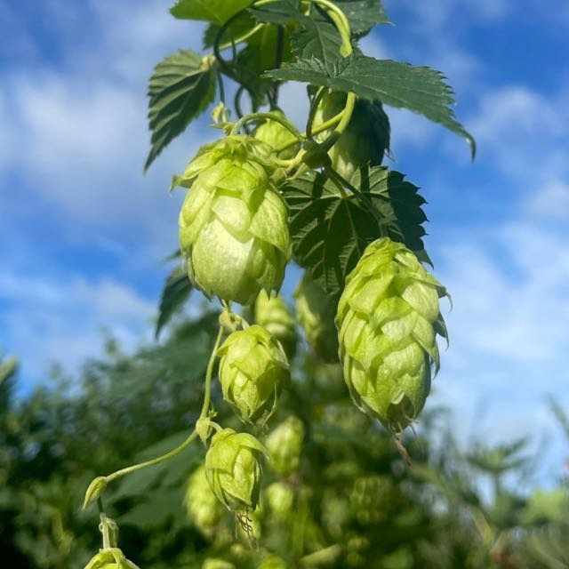
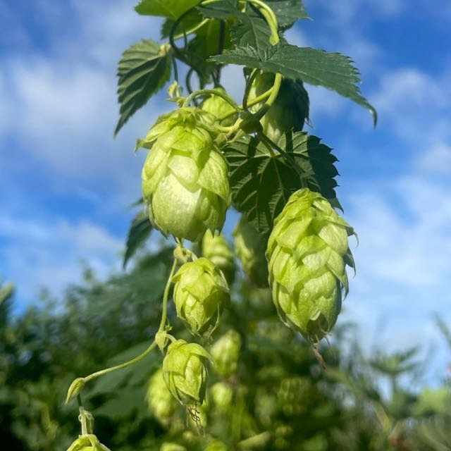

Unieke bieren
Onze bieren zijn nooit hetzelfde en precies dát maakt ze zo bijzonder. Elke batch is met de hand gebrouwen, in beperkte oplage, met smaken die je nergens anders vindt. Als het op is, is het écht op. Geen standaard assortiment, geen tweede kans. Alleen het moment om iets unieks te proeven.
Wil je niets missen? Dan moet je er snel bij zijn. Onze releases verdwijnen vaak sneller dan je denkt. Zodra een nieuwe creatie beschikbaar komt, is het jouw kans om een exemplaar te bemachtigen en deel uit te maken van een selecte groep die dit bier ooit zal proeven. Mis het niet.
 

Meesterlijke creaties
Het ontwikkelen van nieuwe bieren is een ambachtelijke kunst, waarbij elke stap wordt uitgevoerd met de grootste zorg en precisie. Onze brouwers selecteren de beste ingrediënten en experimenteren met smaakprofielen om een perfecte balans te creëren. Elke nieuwe creatie is een meesterwerk van smaak en aroma, waarbij passie en vakmanschap samenkomen om een unieke smaakervaring te bieden.
Met een verfijnd proces en een scherpe focus op kwaliteit, streven onze brouwers naar perfectie. Ze zijn constant op zoek naar nieuwe manieren om de smaak en textuur van onze bieren te verfijnen, altijd met het oog op de hoogste standaarden.
Bier op maat
Bij onze bierbrouwerij geloven we in het creëren van unieke en exclusieve bieren. Dit doen we ook graag voor jou. Of je nu een bedrijf bent dat iets te vieren heeft of een café dat een eigen bier op de tap wil hebben, wij bieden u de mogelijkheid om een bier te creëren dat helemaal bij jou past.
Met een verfijnd proces en een scherpe focus op kwaliteit, streven onze brouwers naar perfectie. Ze zijn constant op zoek naar nieuwe manieren om de smaak en textuur van onze bieren te verfijnen, altijd met het oog op de hoogste standaarden.
Contact
Je wilt graag één van de lekkere waalbocht bieren proberen. Dat snappen we!